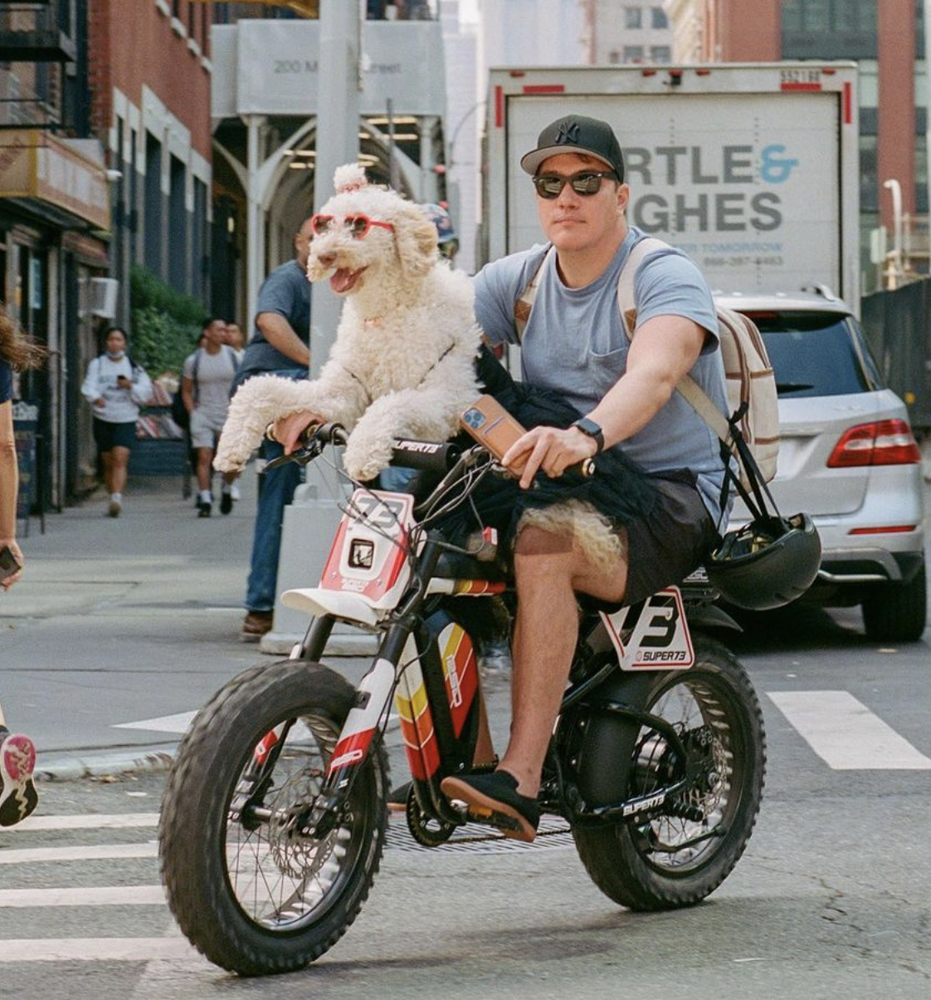

My name is Christopher Luna. I’m 44 years old, and I’ve been an entrepreneur for almost 20 years. I live in New York City with my puppy, Layla, a Labradoodle.
I grew up in a tech family. My father worked in the semiconductor industry until he passed away at 47. Growing up around technology, I was always interested in new innovations and tech businesses.
On a couple of occasions, I partnered with a software engineer to pursue a tech startup. However, I found software engineers to be incredibly unreliable partners. After those experiences, I promised myself I would never work on another startup where I couldn’t control the development of the product—either through funding or by knowing how to build the product myself.
When I look back at the things I’ve built, I feel proud. But I also have a deep interest in emerging technologies that I haven’t fully had the opportunity to explore professionally. Between the time I graduated high school in 1999 and now, there have been several technology waves I wasn’t in a position to capitalize on. I see another wave forming with artificial intelligence, and I want to position myself to catch it. So, for my birthday, I’ve decided to learn to code and see how far I can get over the next 12 months.